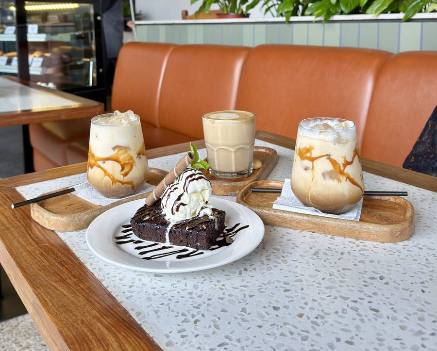
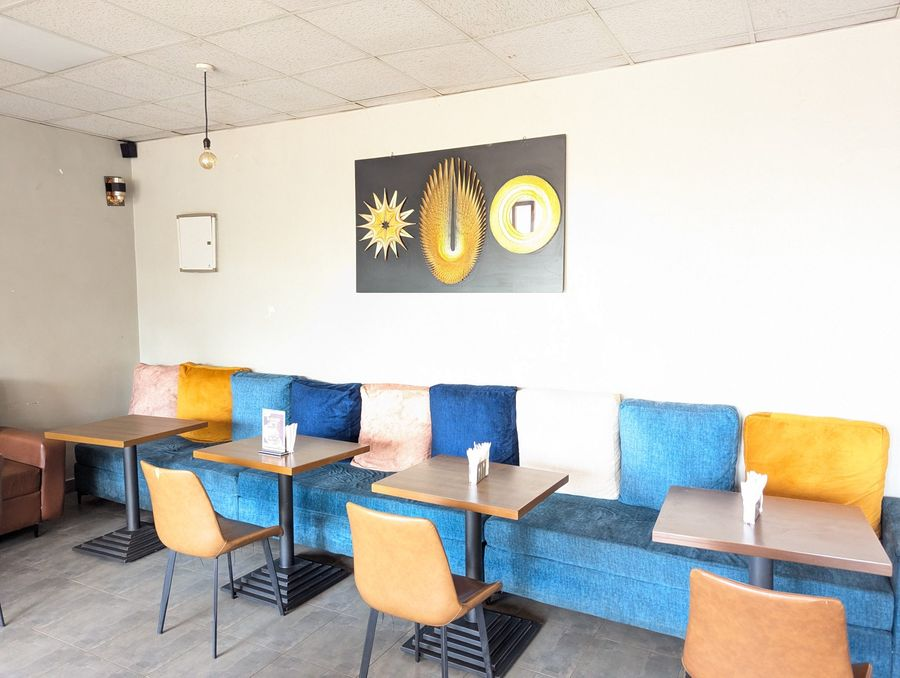

Beyoğlu, Anadolu Sokak 31/A
Taksim'de gece yarısına kadar
Sabah sekizde açılan, gece yarısını yarım saat geçe kapanan bir Beyoğlu kafesi. Kahve, çay, tatlı ve acelesi olmayan sohbetler için buyurun.
Her gün 08:00–00:30
4,9 · 1.223 Google yorumu
Bugün canınız ne çekiyor?
Dört kemer, dört bahane. Birini seçin, menüde o bölüm açılsın.

Adı Beyrut'tan, adresi Taksim'den
İki şehrin ortak bir huyu var: kahve aceleye gelmez, masa kalabalıkla güzelleşir. Biz de işimizi böyle görüyoruz. Fincan önünüze gelir, gerisi sizin sohbetinize kalır.
Anadolu Sokak'taki kafemiz haftanın yedi günü sabah sekizde açılıyor. İşe gitmeden bir fincan, öğle arasında kısa bir mola, akşam İstiklal dönüşü uzun bir buluşma; hangisi için gelirseniz gelin, gece yarısını geçene kadar buradayız.
- Adres
- Katip Mustafa Çelebi, Anadolu Sk. 31/A, 34433 Beyoğlu/İstanbul
- Saatler
- Her gün 08:00–00:30
- Telefon
- 0545 682 40 36
- @beirutkafetaksim
4,9/ 5
Google'da 1.223 yorumun ortalaması
Misafirlerimizin ne yazdığını buraya kopyalamıyoruz; hepsini kaynağında, olduğu gibi okuyabilirsiniz.
Yorumları Google'da okuyunSabah sekizden gece yarısına
Kemerin üstündeki nokta şu anki saati gösterir. Haftanın her günü aynı saatlerde açığız. Özel günlerde saatler değişebilir; emin olmak için aramanız yeterli.
- 08:00Kapı açılır; günün ilk kahvesi.
- 12:00Öğle arası; kısa bir mola, hafif bir atıştırmalık.
- 16:00Çay saati; yanına bir dilim tatlı.
- 20:00Akşam buluşması; masanızı önceden ayırtabilirsiniz.
- 00:30Kapanış; son fincanlar gece yarısından sonra biter.

Masanız hazır olsun
Kaç kişi geleceğinizi ve saati seçin; gerisini Rezervasyon sayfasındaki araç tamamlar ve WhatsApp mesajınızı hazırlar.
Sık sorulanlar
Burada bulamadığınız bir şey olursa yazın; en doğru yanıt bizden gelir.
WhatsApp'tan sorunRezervasyon alıyor musunuz?
Evet. Kişi sayısını, günü ve saati WhatsApp'tan yazmanız yeterli. Rezervasyon sayfasındaki araç bu mesajı sizin yerinize hazırlar; talebiniz biz onayladığımızda kesinleşir.
Kaça kadar açıksınız?
Haftanın her günü 08:00'de açıyor, gece 00:30'da kapatıyoruz. Bu sayfadaki durum göstergesi şu an açık olup olmadığımızı gösterir.
Menüyü nereden görebilirim?
Menü sayfasında kahve, çay, tatlı ve atıştırmalıklardan oluşan örnek bir liste var. Güncel menüyü ve günün çeşitlerini WhatsApp'tan isteyebilirsiniz.
Doğum günü ya da kalabalık bir grup için gelebilir miyiz?
Grup ve kutlamalar için önceden yazmanızı rica ederiz. Kişi sayısına ve saate göre uygunluğu size bildiririz.
Nasıl gelirim?
Adresimiz Katip Mustafa Çelebi Mahallesi, Anadolu Sokak 31/A, Beyoğlu. Taksim Meydanı ve İstiklal Caddesi yürüme mesafesinde; İletişim sayfasında harita ve yol tarifi var.
Bizi burada bulursunuz
Katip Mustafa Çelebi Mahallesi, Anadolu Sokak 31/A, Beyoğlu